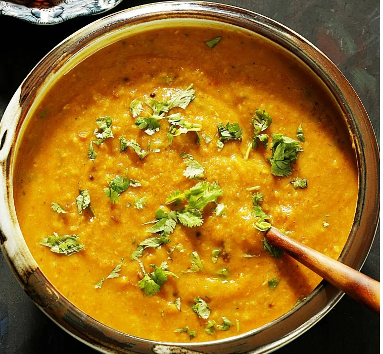

Dal Fry
Ingredients
Instructions
- Rinse the toor dal thoroughly and pressure cook until soft.
- Heat ghee or oil in a pan and add cumin seeds. Let them splutter.
- Add chopped onions, garlic, ginger, and green chilies. Sauté until the onions turn golden brown.
- Add chopped tomatoes, turmeric powder, and garam masala. Cook until the tomatoes are soft and the oil starts to separate.
- Add the cooked dal and stir well. Adjust salt to taste.
- Let it simmer for a few minutes to allow the flavors to meld together.
- Garnish with fresh coriander leaves and serve hot with rice or chapati.